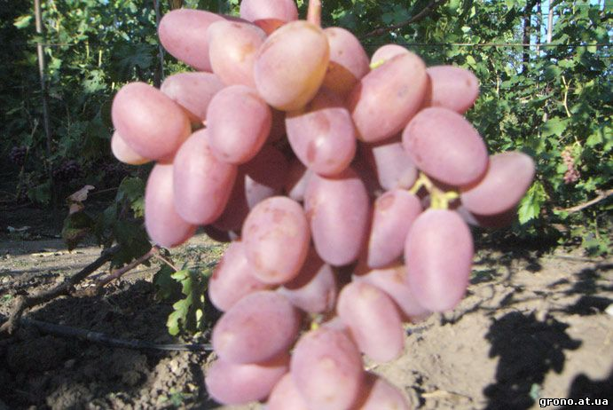
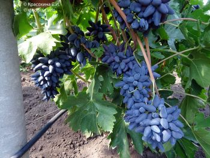

Віктор

Віктор сорт дуже раннього часу дозрівання (105- 110 днів ). В кореневій і привитій культурі середньо сильного
росту. Грона середньо рихлі масою 700-1000 грам, не піддаються горошінню, конічні, дуже гарні. Квітка
двостатева.
Ягоди грубі, 12-18 грам, подовжені, темно розові, гармонійного смаку. Мякоть середньої плотності, шкірка
зїдається нетверда. Зернят в ягоді 1-2 штуки. Пагони дозрівають добре, чубики легко укорінюються, співвідношення
з подвоями хороша, морозостійкість до мінус 23°С. До грибкових захворювань витривалий 3 бала. Транспортабельність
хороша. Товарність дуже висока. Осами пошкоджується не сильно.
Вікінг

Столовагібридна форма винограду дуже раннього терміну дозрівання (100 - 110 днів). Сильноросла. Листя велике
пятілопастний, з відкритою черешкова виїмкою. Квітка двостатеві. Грона великі, конічні, середньо-пухкі. Ягоди
великі (22 мм x 34 мм), соскоподібні, темно-синього кольору. М'якоть ягід щільна з гармонійним смаком. Шкірочка
ягід при їжі не відчувається. В умовах Запорізької області грона р ф. «Вікінг» дозрівають на 3-4 дні раніше сорту
Кодрянка. Здатні зберігатися на кущах до кінця вересня місяця. Визрівання пагонів повне і раннє. Стійкість Вікінга
до мілдью 3,5-4 бали, до оїдіуму - 3 бали. Морозостійкість до - 21 ° С.